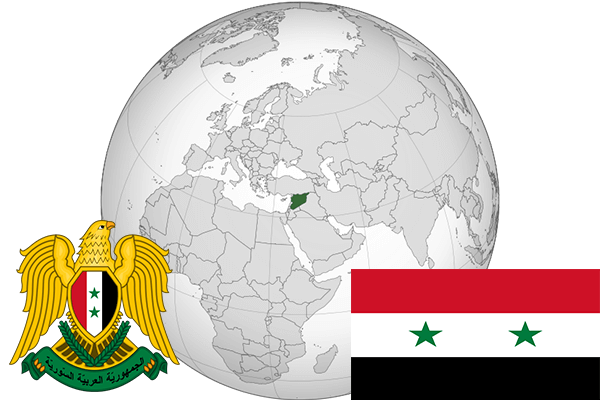

To`liq nomi: Suriya Arab Respublikasi
Region: Janubiy Gʻarbiy Osiyo
Qonunchilik shakli: Respublika
Mustaqillik kuni: 28-sentabr 1961-yil
Poytaxt: Damashq
Maydoni: 185 180 km2
Chegaradosh davlatlari: Livan, Isroil, Iordaniya, Iroq, Turkiya
Aholisi: 17 780 044 (2017-yil)
Aholi zichligi: 99 /км²
Aholining o`rtacha yoshi: 69,84 yil
Rasmiy tili: Arab tili
Dini: Islom
Pul birligi: Suriya funti
Telefon prefiksi: +963
Internet domen: .sy
Xalqaro tashkilotlarga a`zoligi: BMT
Dengiz va okeanlarga chiqishi: O’rta Yer dengizi
YIM: Butun: $59,9mlrd. (2010-yil) Jon boshiga: $2802
Yirik shaharlari: Damashq, Palmeyra, Aleppo